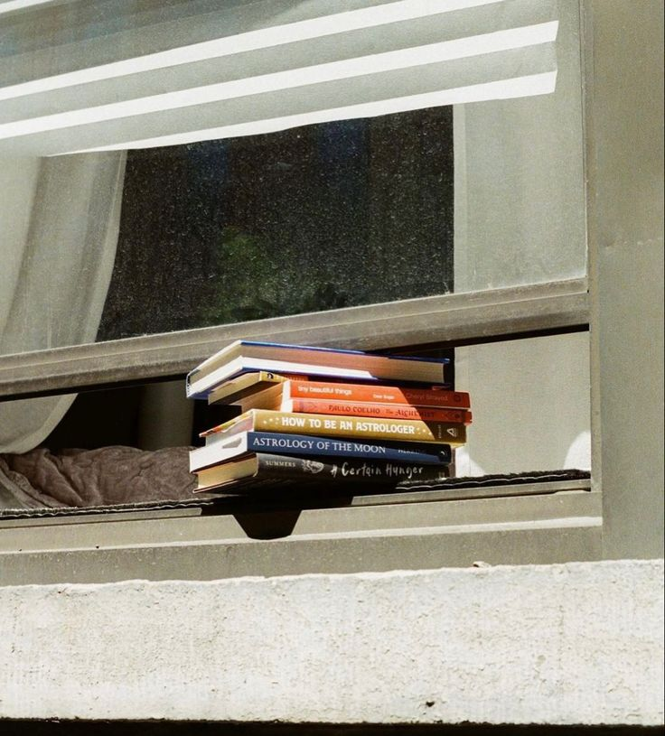

The Art of Slow Living
By shahad
January 22, 2025
Slow living is about intentionally simplifying your life and focusing on what truly matters. It’s a conscious choice to slow down and embrace the present moment.
Focus on meaningful activities
Spend quality time with loved ones
Reduce unnecessary distractions
Read more about this lifestyle at this resource .
From Idea to Action
By shahad
January 21, 2025
Turning ideas into action requires planning and perseverance. This guide provides steps to make your vision a reality.
Define your goals
Create an actionable plan
Take small steps consistently
For a deeper dive, check out this article .
Exploring the Unseen
By shahad
January 20, 2025
Traveling off the beaten path leads to unique experiences and unforgettable stories. Discover the unseen wonders of the world.

Visit less-traveled destinations
Immerse yourself in local cultures
Document your experiences
Find inspiration for your next adventure at this site .